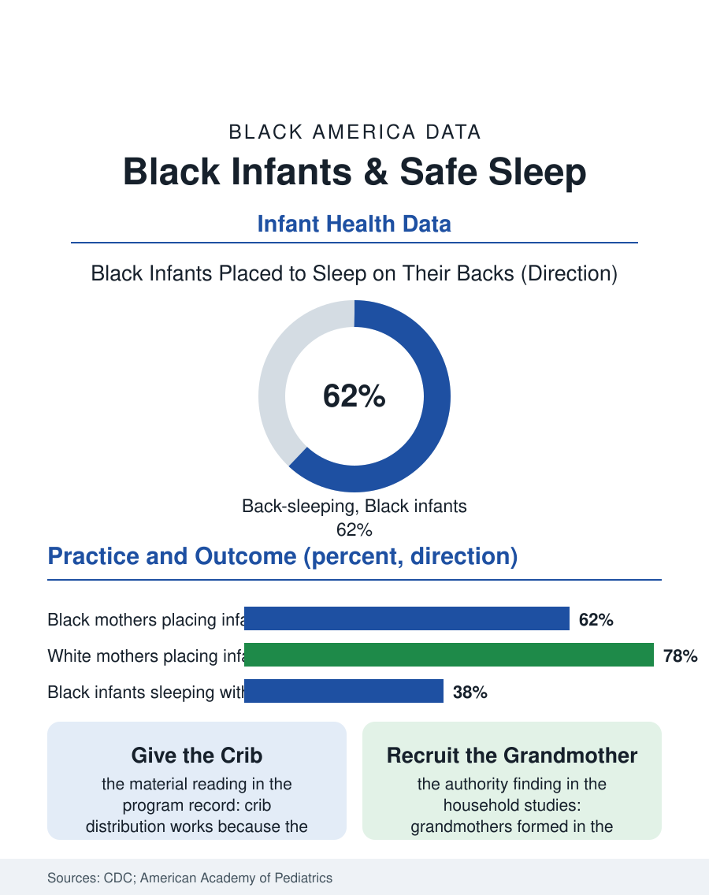

Black Public Health
Back, Firm, Flat, Alone: Black Infants and Safe Sleep
Back-sleeping cut infant deaths dramatically, but the Black rate remains roughly double, in a gap written by housing, leave, and grandmothers' authority. The safe sleep file.

The safest sleep for an infant is on the back, on a firm flat surface, alone in a crib without soft bedding, and the distance between that sentence and the nation's nurseries is measured in the sudden unexpected infant death statistics, where Black infants die at roughly twice the rate of white infants. The gap has persisted through three decades of the Back to Sleep campaign that cut the overall rate dramatically. This article reads the safe sleep file.
A Campaign That Worked Unevenly
The public health history is genuinely encouraging in aggregate: the national rate of sudden unexpected infant death fell by half or more after the back-sleeping campaign of the 1990s, one of modern prevention's clearest victories. The racial decomposition is the file's subject. Black families adopted back-sleeping at substantial but lower rates, bed-sharing remained more prevalent, and the mortality gap, instead of closing with the overall decline, persisted in proportional terms, so that safe sleep now stands as a case study in how a universal message lands unevenly on different material circumstances. The circumstances are the file's substance. Bed-sharing in the survey data correlates with breastfeeding, with housing crowding, with the night feeding logistics of mothers returning to work within weeks of delivery, and with the multigenerational household, where the grandmother's authority on infant care, formed in the stomach-sleeping era, carries the household's practice. The soft bedding data follow the same pattern: crib bumpers, blankets, and stuffed animals, the nursery's decorative economy, appear in Black infants' sleep environments at higher rates in the observational studies, alongside the car seats and couches used as improvised sleep spaces by exhausted caregivers, the highest-risk arrangements in the death scene investigations.
The Hospital's Teachable Moment
The intervention literature locates the highest-yield hours in the first days of life: the maternity ward models the sleep environment the family will copy, and hospitals whose own nurseries were found, in audit studies, placing infants on stomachs or with blankets, reformed their practice and watched their discharged families' home practice follow. The programs with the strongest records in Black communities share the file's now-familiar architecture: they supply the environment rather than describing it, distributing portable cribs and sleep sacks to families without a safe surface, addressing the material deficit directly; they teach through the trusted channels, the home-visiting nurses, the WIC offices, the grandmothers explicitly included in the instruction, converting the household's authority structure from the message's obstacle into its amplifier; and they speak honestly about bed-sharing rather than only against it, teaching the risk gradient, the sofa's extreme danger, the sober non-smoking adult bed's lower but real one, so that the families who will bed-share regardless receive the information that most reduces the harm. The death investigation data support the honesty: a substantial share of the deaths occur in shared surfaces, and messages that pretend otherwise forfeit credibility with exactly the audience whose practice decides the statistics.
Work, Housing, and the Night Shift of Care
The file's final chapter refuses the framing of safe sleep as a knowledge problem, because its data describe a resource problem wearing knowledge's clothes. The mother returning to a night-shift job at three weeks postpartum, sleeping in fragments with the infant in the bed because the alternative is not sleeping at all; the household doubled up in an apartment whose lease forbids the extra occupants, where the crib does not fit the room the family actually sleeps in; the paid leave whose absence is the upstream variable in half the practices in the file, these are the statistics' true authors, and the policy responses that move them, leave, housing, home visiting funded at scale, are the same instruments this atlas records in the maternal file. The trend in the most recent data offers the file a measure of hope: safe sleep practices among Black mothers have improved in successive survey cycles, crib distribution programs now operate in most states, and several cities report local SUID gaps narrowing under sustained, materially supported campaigns. The safe sleep file closes in the nursery at 3 a.m., where public health either is or is not present in the form of a safe surface, a rested caregiver, and a grandmother whose wisdom was recruited rather than overridden. The sentence is simple: back, firm, flat, alone. The file's whole argument is that delivering the sentence is easy, and delivering the conditions under which a tired family can follow it is the actual work, measurable, fundable, and unfinished.
More in Black Public Health
Hypertension Among Black Adults: Prevalence, Control, and Consequences
About 55 percent of Black adults have hypertension — the highest rate of any U.S. group. Prevalence, onset, control, and the stroke, heart, and kidney consequences in the data.
Diabetes Among Black Adults: Prevalence and Complications
Nearly one in five Black adults has diabetes, diagnosed or undiagnosed — and its complications fall with particular weight. The CDC data on prevalence, control, and outcomes.
Black Life Expectancy: The Gap at Birth and Its Causes
Black life expectancy at birth is about 73 years, roughly five years below the national figure — the summary measure of every health gap in this section. The CDC data.
Source: Centers for Disease Control and Prevention, Pregnancy Risk Assessment Monitoring System (PRAMS); American Academy of Pediatrics safe sleep guidance; SUID surveillance data.